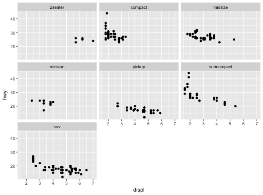
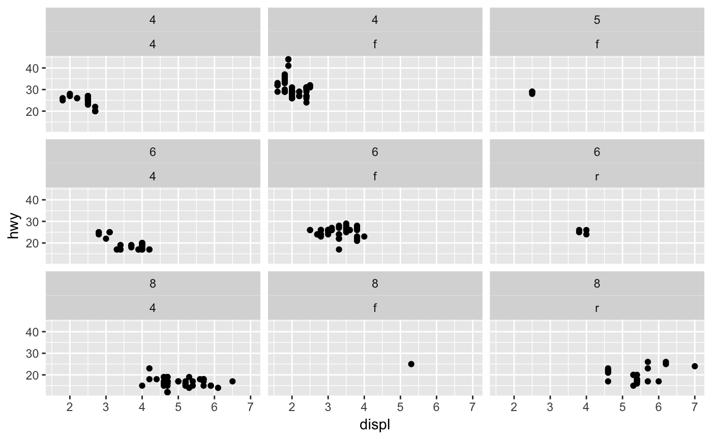
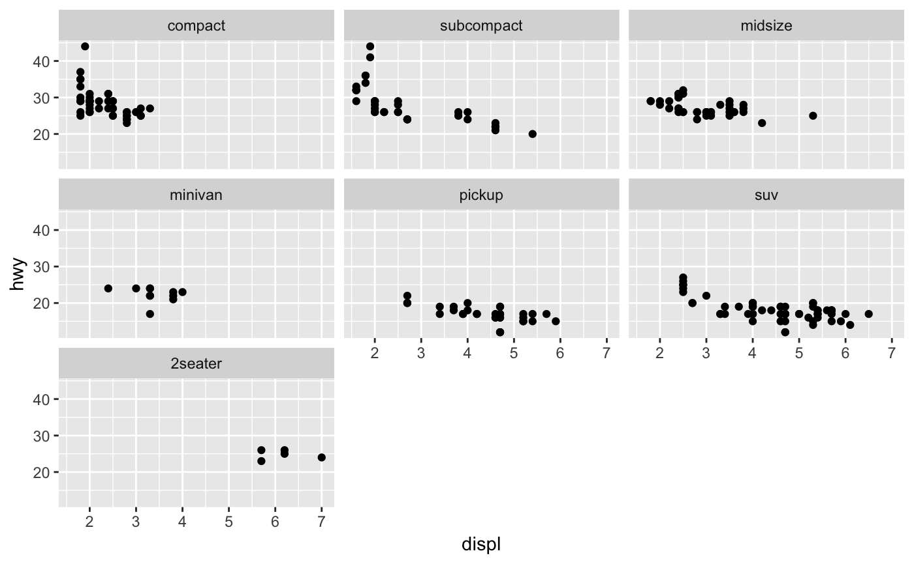
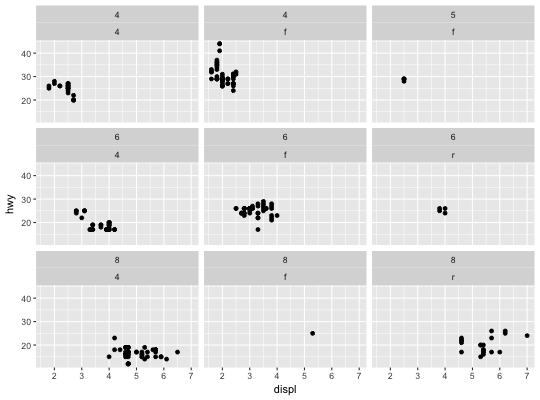
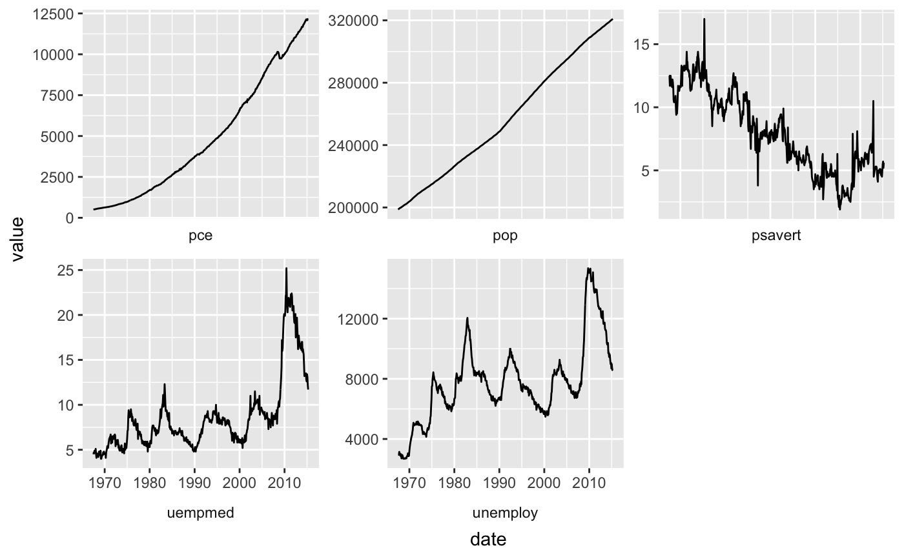
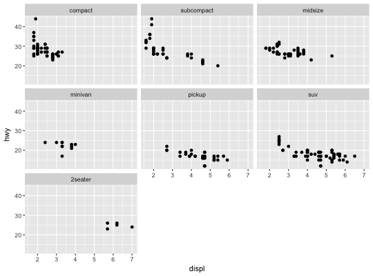
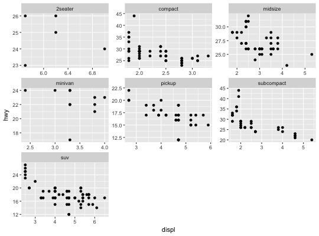
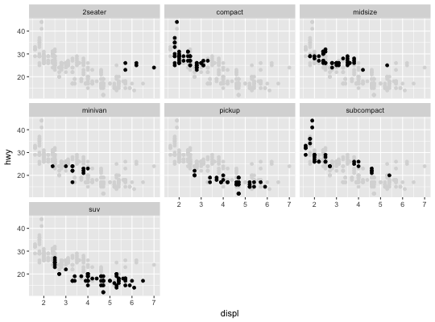
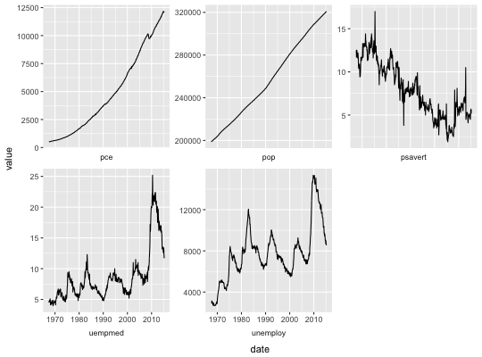

facet_wrap wraps a 1d sequence of panels into 2d. This is generally
a better use of screen space than facet_grid because most
displays are roughly rectangular.
facet_wrap(facets, nrow = NULL, ncol = NULL, scales = "fixed", shrink = TRUE, labeller = "label_value", as.table = TRUE, switch = NULL, drop = TRUE, dir = "h", strip.position = "top")
Either a formula or character vector. Use either a
one sided formula, ~a + b, or a character vector, c("a", "b").
Number of rows and columns.
should Scales be fixed ("fixed", the default),
free ("free"), or free in one dimension ("free_x",
"free_y").
If TRUE, will shrink scales to fit output of
statistics, not raw data. If FALSE, will be range of raw data
before statistical summary.
A function that takes one data frame of labels and
returns a list or data frame of character vectors. Each input
column corresponds to one factor. Thus there will be more than
one with formulae of the type ~cyl + am. Each output
column gets displayed as one separate line in the strip
label. This function should inherit from the "labeller" S3 class
for compatibility with labeller(). See
label_value for more details and pointers to other
options.
If TRUE, the default, the facets are laid out like
a table with highest values at the bottom-right. If FALSE, the
facets are laid out like a plot with the highest value at the top-right.
By default, the labels are displayed on the top and
right of the plot. If "x", the top labels will be
displayed to the bottom. If "y", the right-hand side
labels will be displayed to the left. Can also be set to
"both".
If TRUE, the default, all factor levels not used in the
data will automatically be dropped. If FALSE, all factor levels
will be shown, regardless of whether or not they appear in the data.
Direction: either "h" for horizontal, the default, or "v", for vertical.
By default, the labels are displayed on the top of
the plot. Using strip.position it is possible to place the labels on
either of the four sides by setting strip.position = c("top",
"bottom", "left", "right")
# Control the number of rows and columns with nrow and ncol ggplot(mpg, aes(displ, hwy)) + geom_point() + facet_wrap(~class, nrow = 4)# You can facet by multiple variables ggplot(mpg, aes(displ, hwy)) + geom_point() + facet_wrap(~ cyl + drv)# Or use a character vector: ggplot(mpg, aes(displ, hwy)) + geom_point() + facet_wrap(c("cyl", "drv"))# Use the `labeller` option to control how labels are printed: ggplot(mpg, aes(displ, hwy)) + geom_point() + facet_wrap(c("cyl", "drv"), labeller = "label_both")# To change the order in which the panels appear, change the levels # of the underlying factor. mpg$class2 <- reorder(mpg$class, mpg$displ) ggplot(mpg, aes(displ, hwy)) + geom_point() + facet_wrap(~class2)# By default, the same scales are used for all panels. You can allow # scales to vary across the panels with the `scales` argument. # Free scales make it easier to see patterns within each panel, but # harder to compare across panels. ggplot(mpg, aes(displ, hwy)) + geom_point() + facet_wrap(~class, scales = "free")# To repeat the same data in every panel, simply construct a data frame # that does not contain the facetting variable. ggplot(mpg, aes(displ, hwy)) + geom_point(data = transform(mpg, class = NULL), colour = "grey85") + geom_point() + facet_wrap(~class)# Use `strip.position` to display the facet labels at the side of your # choice. Setting it to `bottom` makes it act as a subtitle for the axis. # This is typically used with free scales and a theme without boxes around # strip labels. ggplot(economics_long, aes(date, value)) + geom_line() + facet_wrap(~variable, scales = "free_y", nrow = 2, strip.position = "bottom") + theme(strip.background = element_blank(), strip.placement = "outside")#> Warning: Suppressing axis rendering when strip.position = 'bottom' and strip.placement == 'outside'